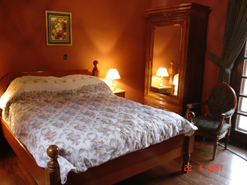
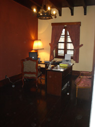

Rooms
All rooms have cable TV, and their own private bathroom and a shower with hot water. We have decided not to install telephone lines in the rooms to help our guests “get away” and truly experience the history of the house. However, the business center makes phone calls or email accessible to all. The Blue Room—Atitlán: Named after one of the most beautiful lakes in the world, our Atitlán room has two queen-sized beds and is the only room that includes a bathtub. Facing the street, it allows guests to take a peek into everyday Guatemala below. Or the wooden shutters can be closed to get away from it all and relax.
The Red Room—Pacaya: Looking down onto the street for those who simply want to watch life unfold at their feet, the Pacaya room is named after one of Guatemala's most active volcanoes. With warm decor and two queen-sized beds, this room emanates passion and fire.
The Green Room—Petén: Peten is the largest departamento, or state, in Guatemala, and is known for its tropical jungles and ruins of ancient Mayan cities like Tikal. Its two twin-sized beds and access to the garden terrace, which overlooks the garden and fountain, make it easy for guests to relax and enjoy looking out at the city views—much the same way the Mayan priests looked down at the populace from atop the majestic pyramids of Tikal.
The Brick Room—Adobo: Many of Guatemala’s first houses were built from clay and adobe until the earthquake in 1773 destroyed most of them. Instead of rebuilding, the capital was moved to where it is today. With access to the garden terrace and a view into the small, inner courtyard, the Adobo room is surrounded by natural light. Guests can also shut the windows and take a siesta in the queen-sized bed.  Breakfast
The Business Center 
|